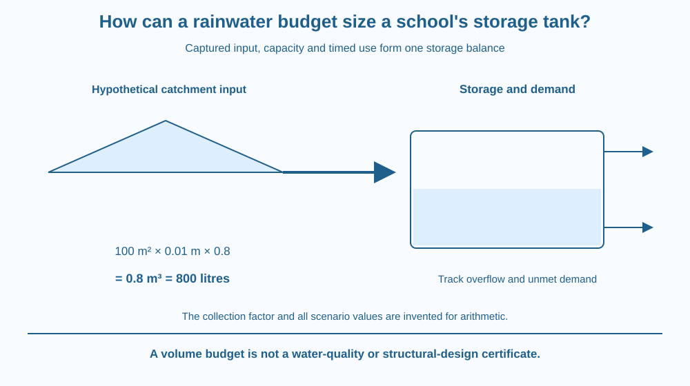

Use a water budget to relate roof catchment, collection losses, storage and demand. Distinguish total available rainwater from the tank capacity needed across time. Keep all example quantities explicitly hypothetical and avoid treating a storage calculation as a drinking-water or structural-design certificate.
A school roof can collect a large total during a wet spell, yet a tank may overflow then run short later. A capacity chosen from the annual total alone misses the timing of inflow and use.
The useful question is how much arrives, how much is lost, what is already stored and how quickly the intended demand removes it. A tank is a buffer in a changing system, not a container that makes rainfall uniform through the year.
A good calculation needs both geometry and a sequence of events.
The ideal rain volume from a catchment is area × rainfall depth in consistent units. A real collection system retains only part of that input. A collection factor can represent specified losses in a simplified model, provided its meaning and basis are stated.
For an invented example, use a 100-square-metre roof, 10 millimetres of rain and a model collection factor of 0.8. Ten millimetres is 0.01 metre. Multiplying gives 0.8 cubic metre, or 800 litres, collected under the assumptions.
The factor 0.8 is invented for the example, not a universal value for Indian roofs. Surface, first-flush handling, leaks and collection conditions can change actual capture. A practical design needs relevant evidence rather than copying the classroom number.
A storage balance follows starting volume plus inflow minus delivered use and other losses. If the result exceeds capacity, some water overflows. If available water is less than demand, the model must record unmet demand rather than a negative physical water volume.
The timing matters. Two rainfall sequences with the same total can require different storage capacities or produce different shortages. Long dry intervals can matter even when an annual sum looks generous.
Demand should be defined by intended use and interval. An invented 100-litre model demand is not a claim about a real school's needs. Useful planning records variation and what happens when demand or rainfall differs from the chosen scenario.
Water quality and system condition are separate requirements. Roof collection can contain material unsuitable for a proposed use. A volume calculation does not certify potability or prescribe a treatment method.
Tank placement, structural support and overflow routing also require suitable adult and professional design. This lesson explains the budget and evidence needs, not a building installation, plumbing specification or guaranteed savings claim.
Draw a tank with a capacity line. Add an inflow arrow from the roof, an outflow for demand and a separate overflow route. Mark the starting level before each model event.
Step through a wet event followed by dry-use intervals. Update storage without allowing it above capacity or below zero. Record lost overflow and unmet demand as separate outputs of the model.
Then change only the event order while preserving the total input. A different result shows why sequence matters. The tank's usefulness is a relationship between timing, capacity and demand, not simply the largest rain volume mentioned in a report.
The SVG shows roof catchment, a model loss factor, a tank and demand and overflow routes. The invented 100 m², 10 mm and 0.8 example produces 800 litres.
A lower timeline distinguishes wet input events from dry demand intervals. Capacity clips the upper storage level, while an unmet-demand marker records a shortage without drawing negative water.
The illustration is not an installation plan or a real school's measured rainfall record. Its caption states that quality, structural support and actual local data are additional questions beyond the numerical budget.

Rainwater-storage projects in India face varied rainfall patterns, roof conditions and intended uses. A single national capacity rule cannot replace a local budget and appropriate engineering assessment.
A school project can use fictional sequences or reliable supplied records. It should not send children onto roofs, into tanks or near overflow drains during rain. Existing ground-level diagrams provide enough context.
The lesson also differs from groundwater recharge. A storage tank retains water for a planned use, while recharge concerns water entering subsurface systems. Both can belong to wider water management, but their budgets and decisions are not identical.
Use paper, a pencil and a calculator if desired.
Label every input hypothetical. The result is an arithmetic scenario, not a recommended tank size. Do not infer water safety, building strength or a monetary saving from the calculated litres.
Why can a tank overflow during a rainy period and still fail to meet later demand? Explain the limit on carrying water across time.
Now compare two sequences with equal total rain but different spacing between events. What additional information is needed beyond the annual total? A useful design must preserve the temporal pattern that the sum hides.
What gives ideal rainfall volume before collection losses?
Answer: C — Area times depth gives volume when units are consistent.
Why is an annual total insufficient for tank capacity?
Answer: A — A tank must carry water between events, so sequence and use matter.
Invented area 100 m², depth 0.01 m and factor 0.8 give what volume?
Answer: B — The product is 0.8 cubic metre, equal to 800 litres.
Create a storage-budget sheet with catchment area, rainfall depth, collection assumption, starting storage, capacity, demand, overflow and unmet demand. Use the invented example for one event.
Add two alternative timing scenarios and a list of real evidence needed before design. Your conclusion must remain a budget proposal, not a recommendation to build a tank or certify the collected water for drinking.
More total rain does not automatically solve a timing problem. Water that overflows when a tank is full cannot help a later dry interval unless the system has another suitable route or storage. A sequence-based account reveals opportunities and limits that an impressive annual total can hide.
Tank sizing needs a time-based balance of captured rain, capacity and demand; annual totals, invented capture factors and volume arithmetic alone cannot complete a real design.